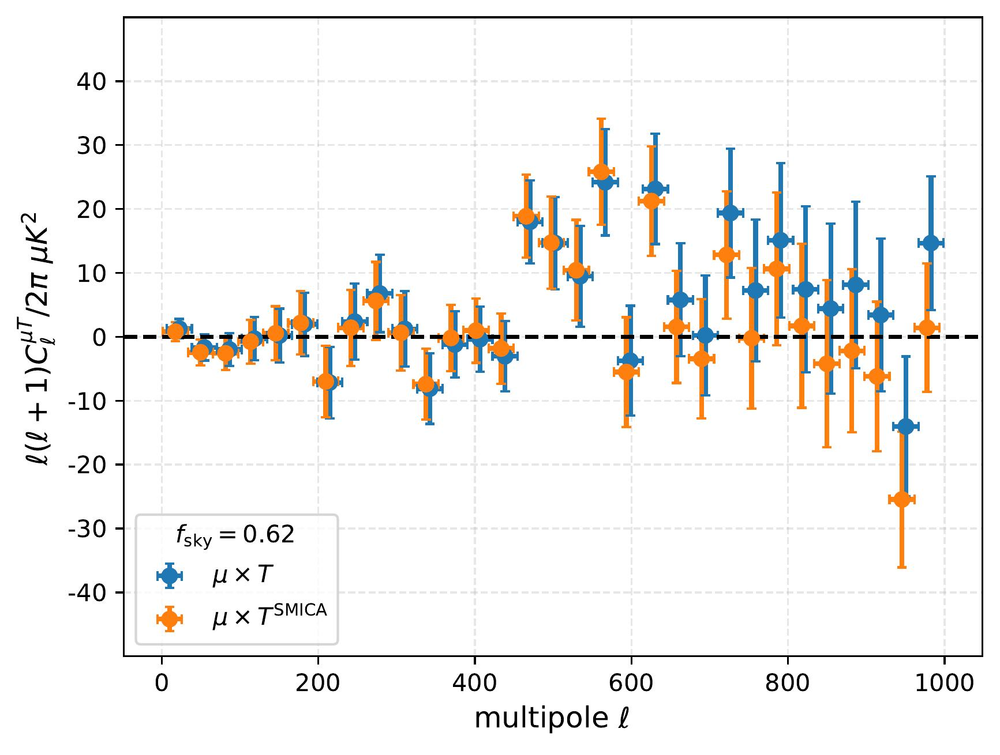
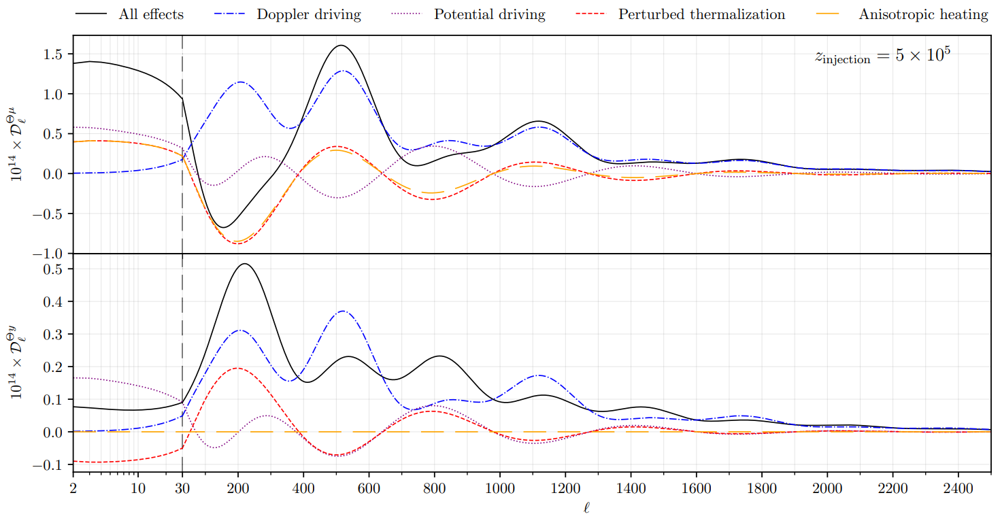

<section>
	<div class="container">
		<h3>Spectral distortions anisotropies</h3>

		<h4>Constraints on primordial non-Gaussianity</h4>
		<p><span class="image right"></span>
			Primordial non-Gaussianity can source μ-distortion anisotropies that are correlated with the large-scale
			temperature and polarization signals of the cosmic microwave background. A measurement of μT and μE
			correlations can therefore be used to constrain it on wavelengths of perturbations not directly probed by
			the standard CMB anisotropies. We have run thorough forecasts for a variety of state-of-the-art and upcoming
			surveys, and developed a pipeline based on needlet constrained internal linear combination which we have
			applied to <i>Planck</i> data.
			Doing so, we have reconstructed for the first time a temperature-free <i>Planck</i> μ map, and we have set
			the first constraints on local non-Gaussianity which use the whole multipole information and polarization
			data.<br>
			<b>References:</b><br>
			AR, M. Liguori, N. Bartolo, and M. Shiraishi, <i>Primordial non-Gaussianity with μ-type and y-type spectral
				distortions: exploiting Cosmic Microwave Background polarization and dealing with secondary
				sources</i>, JCAP 09 (2017) 042, <a href="https://arxiv.org/abs/1707.04759">
				[arXiv:1707.04759] </a> <br>
			M. Remazeilles, AR, and J. Chluba, <i>Leverage on small-scale primordial non-Gaussianity through
				cross-correlations between CMB E-mode and μ-distortion anisotropies</i>, Mon. Not. Roy. Astron. Soc. 512
			(2022), no. 1 455–470, <a href="https://arxiv.org/abs/2110.14664"> [arXiv:2110.14664] </a> <br>
			A. Rotti, AR, and J. Chluba, <i>Non-Gaussianity constraints with anisotropic μ distortion measurements from
				Planck</i>, Mon. Not. Roy. Astron. Soc. 515 (2022), no. 4 5847–5868, <a
				href="https://arxiv.org/abs/2205.15971"> [arXiv:2205.15971] </a>
		</p>

		<h4>Evolution of anisotropic spectral distortions</h4>
		<span class="image fit"></span>
		<p>
			Inhomogeneous spectral distortions of the cosmic microwave background, which arise naturally from
			non-homogeneous energy injections, evolve in a perturbed universe obeying a high-dimensional system of
			partial differential equation, which stems from the fact that the spectral evolution has to be explicitly
			taken into account.
			We show that by expanding the photon spectrum in a basis generated by the boost operator the complexity of
			the calculation reduces drastically, and the problem can be described by a common hierarchy of Boltzmann
			equations. These can be integrated using the procedure commonly adopted to calculate temperature
			fluctuation, which enabled us to calculate the spectral distortion angular power spectra. As a case study,
			we have forecasted the detectability of instantaneous energy injection and of a decaying particle
			scenario.<br>
			<b>References:</b><br>
			J. Chluba, T. Kite, and AR, <i>Spectro-spatial evolution of the CMB. Part I. Discretisation
				of the thermalisation Green’s function</i>, JCAP 11 (2023) 026, <a
				href="https://arxiv.org/abs/2210.09327"> [arXiv:2210.09327] </a> <br>
			J. Chluba, AR, and T. Kite, <i>Spectro-spatial evolution of the CMB. Part II. Generalised Boltzmann
				hierarchy</i>, JCAP 11 (2023) 027, <a href="https://arxiv.org/abs/2210.15308"> [arXiv:2210.15308] </a>
			<br>
			T. Kite, AR, and J. Chluba, <i>Spectro-spatial evolution of the CMB. Part III. Transfer functions, power
				spectra and Fisher forecasts</i>, JCAP 11 (2023) 028, <a href="https://arxiv.org/abs/2212.02817">
				[arXiv:2212.02817] </a>
		</p>
	</div>
</section>